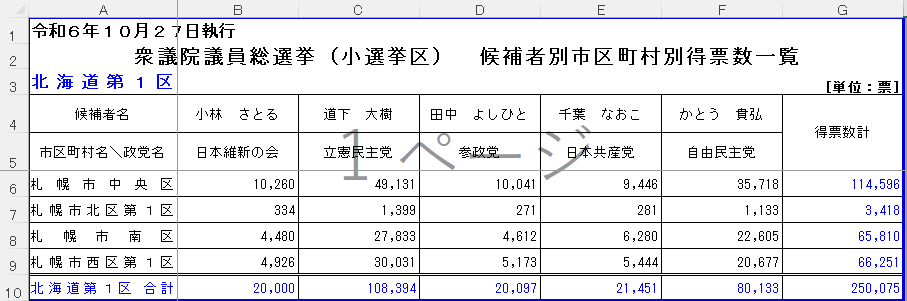

第3部 データを集める
神の頭を切り落とす
物騒なタイトルですいません、が、そんなに物騒な話ではありません。主に役所が出している、めんどくさいExcelを、分析しやすい形に組み替えるかんたんなやり方を説明します。
神エクセルとは
役所（だけではないですが）が公表するExcelファイルには、独特の様式があります。上のほうに表題やら注釈やらがあって、データのラベルに当たるものが2段や3段に分かれて書いてあって、おまけにセルが結合されている。Excelが表計算ソフトではなく「方眼紙」として使われた結果です。
こうした資料は基本的に、紙に印刷して人が見るために作られています。09章でも説明しましたが、人間にとってはこういうスタイルのほうが見やすいし分かりやすい。その意味では理にかなっているわけです。
でも read_excel() で読むと悲惨なことになります。結合されたセルの二つめ以降はNAになり、ラベルの2段目はデータの1行目として読まれる。もうぐちゃぐちゃ。その筋では「紙＝神」をもじって「神エクセル」「ネ申エクセル」と呼ばれ、はっきり言って忌み嫌われます。
こういうファイルを読み込んで、分析可能な形に力技で直そうとすると、rename と mutate と filter を延々と書くことになります。しかもシートが何十枚もあれば、それぞれ微妙に形が違ったりするわけで、一つひとつプログラムを書き換えなくてはいけない。つらい。
でも、もっとマシなやり方があります。
ふたつの武器で戦う
使うのはtidyxlとunpivotrというふたつのパッケージです。
install.packages("tidyxl")
install.packages("unpivotr")
library(tidyxl)
library(unpivotr)Excelで開くと、「北海道第１区」のシートはこんな感じでした。

最初の3行はデータではなく注釈。数字のうち、たとえば一番左上にある「10,260」は、「日本維新の会」所属の「小林さとる氏」が「札幌市中央区」で獲得した得票数を示しています。これは人間の目には一目瞭然なのですが、人間の常識を持ち合わせないコンピューターには読み取ることができません。
そこで、以下のような形に加工していくことが必要なわけです。縦長の、いわゆる整然（tidy）データです。
| 市区町村 | 候補者 | 政党 | 得票 |
|---|---|---|---|
| 札幌市中央区 | 小林 さとる | 日本維新の会 | 10260 |
| 札幌市中央区 | 道下 大樹 | 立憲民主党 | 49131 |
| 札幌市北区第１区 | 小林 さとる | 日本維新の会 | 334 |
tidyxlパッケージのxlsx_cells()という関数で表をセルごとにバラしたうえで、unpivotrパッケージのbehead()関数でうまいことラベルを取り出してやると、この加工が簡単にできます。こんなイメージです。
コードはこんな感じ。behead()というのが最重要なわけですが、これは市区町村名や候補者名など、データのラベルに当たるものを切り離して、しかるべきところへ格納するための関数です。「首をはねる」という意味の英語から来ています（たぶん）。
"download/000979538.xlsx" %>%
xlsx_cells() %>%
filter(sheet == "北海道第１区", row >= 4, !is_blank) %>%
behead("up", "name") %>%
behead("up", "party") %>%
behead("left", "municipality") %>%
select(municipality, name, party, numeric)それぞれのコードが何をしているのか、順番に見ていきましょう。
xlsx_cells() では、Excelの各セルについて、行にばらしていきます。たとえば3行×4列の表なら、12行のtibbleに変換します。それぞれの行には、もとのExcelでのセルの位置（行番号・列番号）や、セルに入力されている値、データの種類などが記録されます。
次にfilter() で「北海道第１区」のシートだけに絞っています。そのうえで row >= 4 で、上の3行（日付と表題と選挙区名）を捨てています。
is_blank はxlsx_cells()関数で生成され、セルが空っぽのときに TRUE になる列です。頭に ! をつけると「〜でない」という意味になる（6章）ので、ここでは空っぽでないセルだけを抽出しています。見た目は空白でも罫線などの書式がついていれば、xlsx_cells() はそれをひとつのセルとして読み込みます。このファイルでは表のすぐ下に、そういう空っぽのセルが何行ぶんも並んでいるので、先に落としておかないと、中身のない行がまじってしまいます。
そのあとに behead() が3回出てきます。丸括弧の中には二つの要素が記述されています。データのラベルに当たるセルが、そのデータの入ったセルから見てどこにあるかをupとかleftとかで示すのが、一つめの要素。そのラベルを何という名前の列に入れるかを決めるのが、二つめです。
一つめの要素では以下のような指定ができます。
| 指定 | 各セルから見た探し方 |
|---|---|
"up" | 上に進み、表の上端にあるセルを探す |
"left" | 左に進み、表の左端にあるセルを探す |
"up-left" | 上端まで進み、そこが空白なら左に進んで値のあるセルを探す |
"left-up" | 左端まで進み、そこが空白なら上に進んで値のあるセルを探す |
上のコードでは、"up" で候補者名と政党名を上からひとつずつ切り離し、そのあと "left" で左の市区町村名を切り離しています。1枚ずつ皮をむくように、外側から順番にはがしていくイメージです。はがす順番が大事です。
1枚ずつはがされていく様子を、動きで見てみましょう。
このコードを1行ずつ、順番に実行してみてください。どんなふうにデータが加工されていくか確かめると、腑に落ちるようになると思います。
最後の select() では、ほしい列だけを残しています。得票数は数値なので、numeric の列に入っています。
シートを全部処理する
さて、このファイルには北海道の小選挙区の数だけシートがあります。全部に同じ処理をしたい。17章で覚えたfor文の出番です。今回は「ページの一覧」ではなく「シートの一覧」に対してループを回します。
まずシート名の一覧を取ります。
sheet_names <- "download/000979538.xlsx" %>%
excel_sheets() # シート名をとる関数
sheet_names [1] "北海道第１区" "北海道第２区" "北海道第３区" "北海道第４区"
[5] "北海道第５区" "北海道第６区" "北海道第７区" "北海道第８区"
[9] "北海道第９区" "北海道第１０区" "北海道第１１区" "北海道第１２区"excel_sheets() はreadxlの関数です（library(readxl) を忘れずに）。
そして回します。
vote_data <- tibble() # まずは空っぽのtibbleを作る
for (i in sheet_names) {
vote_data_temporaly <- "download/000979538.xlsx" %>%
xlsx_cells() %>%
filter(sheet == i, row >= 4, !is_blank) %>%
behead("up", "name") %>%
behead("up", "party") %>%
behead("left", "municipality") %>%
mutate(district = i) %>%
select(district, municipality, name, party, vote = numeric)
vote_data <- bind_rows(vote_data, vote_data_temporaly)
}さっきとの違いは二つです。
一つは filter(sheet == i) で、「北海道第１区」と決め打ちしていたところを、ループの変数 i にしたこと。ループの1周目では「北海道第１区」、2周目では「北海道第２区」のシートが処理されます。
もう一つは mutate(district = i) のところ。変数 i をデータの一部として持ち込んでいます。小選挙区名を格納するための列を足しているわけです。
ファイルもシートも全部処理する
47都道府県分のファイルがあり、それぞれにシートが複数ある。というわけで、for文を二重にします。
excel_files <- list.files("download/") %>%
str_c("download/", .)
# 空のtibbleを初期化
vote_data <- tibble()
# 各ファイルをループ
for (i in excel_files) {
cells <- xlsx_cells(i) # ファイルを1回だけ読み込む
sheet_names <- excel_sheets(i)
# 各シートをループ
for (j in sheet_names) {
vote_data_temp <- cells %>%
filter(sheet == j, row >= 4, !is_blank) %>%
behead("up", "name") %>%
behead("up", "party") %>%
behead("left", "municipality") %>%
mutate(district = j,
file = basename(i)) %>%
select(district, municipality, name, party, vote = numeric, file)
vote_data <- bind_rows(vote_data, vote_data_temp)
}
}外側のループがファイルを1つずつ、内側のループがそのファイルのシートを1つずつ処理します。シートは全部で289枚あるので、内側の処理は289回まわることになります。
外側のループの最初で、xlsx_cells(i) の結果を cells に入れています。ファイルを読み込むのは時間がかかるので、シートごとに読み直すのではなく、1回だけ読んでおいて、それを使い回しているわけです。
file = basename(i) で、どのファイルから来たデータなのかを記録しています。これがないと、あとで「この行はどこから来たんだ」が追えなくなります。
数え上げて確かめる
集まったら、必ず確かめます。ここで、とっておいた合計の行の出番です。
市区町村ごとの全候補者の票を足し上げたものと、各シートの合計の行にある「得票数計」（その選挙区の票の総数）を足したものが、一致するかを見てみます。
# 市区町村ごとの、全候補者の票を足す
vote_data %>%
filter(name != "得票数計", !str_detect(municipality, "合計")) %>%
summarize(gokei = sum(vote))
# 合計の行にある「得票数計」を足す
vote_data %>%
filter(name == "得票数計", str_detect(municipality, "合計")) %>%
summarize(gokei = sum(vote))# A tibble: 1 × 1
gokei
<dbl>
1 54261878.
# A tibble: 1 × 1
gokei
<dbl>
1 54261878.ひとつめの filter() では、得票数計の列から来た行と、合計の行から来た行を除いて、市区町村ごとの票だけを残しています。ふたつめは逆に、合計の行の得票数計だけを残しています。str_detect() は6章で出てきた、ある文字を含むかどうかを調べる関数でした。
どちらも5426万1878票で、一致しました。
さらに、総務省が別に公表している、都道府県ごとの有効投票数をまとめた表を開いてみると、小選挙区の有効投票数の合計は5426万1878票。こちらで足し上げた数字と一致していました。
ちなみに、「54261878.」というふうに、数字のおしりに「.」がついているのは、得票数のなかに小数がまじっていて、足し合わせた数字が整数にはなっていないからです。なんで小数が混じった数字があるのかといえば、按分票があるから。按分票とは……説明不要ですよね。
これで第3部は終わりです。ウェブのページから表を取り、たくさんのページやファイルをfor文でまとめて集め、扱いにくいExcelを分析しやすい形に組み替えるところまでできるようになりました。
次の第4部では、作業がうまく進まなくなったときの話をします。エラーとの付き合い方と、AIに手伝ってもらうやり方です。